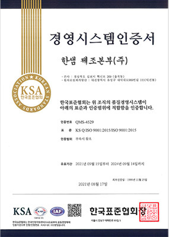
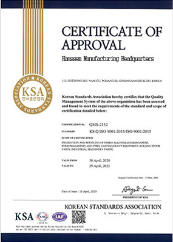

고객감동경영
한샘의 과거 성장과 미래 혁신을 이어갈 원동력은 고객감동 경영입니다.
고객의 불만의 목소리는 제품의 안전을 더욱 강화시키는 원동력이 되었고,
이를 끊임없이 보완하고 서비스를 강화하며 고객에게 최상의 만족을 전하겠다는
고객감동의 다짐은 한샘을 50년간 성장시켜 온 근간이기도 합니다.
안전경영
“안전기준 강화로 서랍장 전도사고 ZERO”
2016년부터 서랍장 벽고정 의무화 제도를 도입해 시행 중입니다. 벽고정 시공을 거부하는 소비자에게는 환불 조치를 하는 등 강력한 안전조치를 정착시켰습니다. 초기 서랍장 매출이 40% 이상 감소했지만, 이에 대한 취지를 소비자들께서 이해해주시고, 안전에 대한 인식 수준이 높아지며 오히려 한샘 제품 안전성을 믿고 선택해주시고 계십니다. 이러한 강력한 정책과 소비자의 안전의식이 높아지면서 2019년 이래로 서랍장 전도사고 “ZERO”를 유지하고 있습니다.
안전보건 리스크 관리
-
- 산업안전관련조사과정
- 사고발생
- 긴급조치
- 발생보고
- 재해조사
- 원인분석
- 대책수립
- 대책실시계획
- 실시
- 확인
-
- 관리보고체계
- 사고발생
- 본사보고
- 담당임원
- CEO보고
- 대책 실시 확인 보고
품질관리
“한샘은 철저한 품질 관리를 통해 고객이 건강하고 안전하게 제품과 서비스를 이용할 권리를 지키고 있습니다.”
한샘은 CQO (최고품질경영책임자) 주관으로 사내 품질 관리조직인 생활환경기술연구소, CS품질 혁신팀에서 분기별 품질과 관련한 핵심성과 지표를 합의 및 설정하고 제품과 서비스의 종합적인 품질을 관리하고있습니다.
식스시그마 (six sigma)
한샘은 0.001%의 불량도 허용하지 않는 식스시그마 경영 전략을 기반으로 품질 혁신을 통한 고객만족을 추구합니다.
 